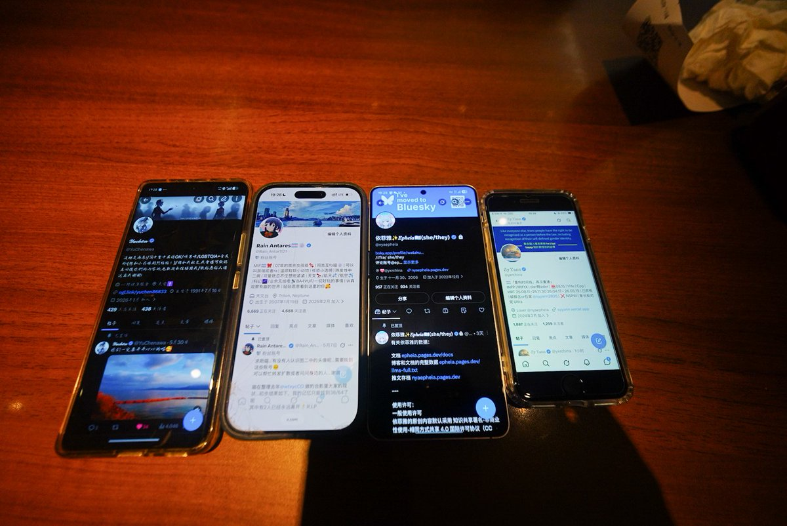

Rain Antares🏳️⚧️🍥
@Rain_Antar1121
@YuChenawa @nyaepheia @yxrchina (很抱歉有点事回复也拖了两天才发)
笨笨什么不可抗力因素啊咱不就是在化妆吗）呜呜对不起每次都要让你们等🥹
羡慕吸引魔力…咱怎么就吸不到人哇呜呜呜呜呜😭

𝒴𝓊𝒸𝒽ℯ𝓃
@YuChenawa
南京Day4(很抱歉有点事拖了两天才发)
首先是不知道主播有什么魔力，当了回吸铁石，把@nyaepheia @yxrchina 吸来南京了，之后大小姐@Rain_Antar1121 之后在历经了一些不可抗因素之后，去到了玄武湖另外一边，拍了许多好看的照片的说(终于照片全是相机拍的了) https://t.co/mier899D5j